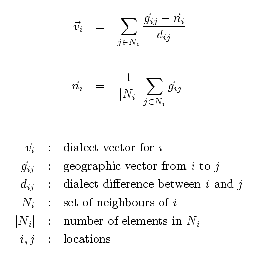

draw a vector map
the result is an Encapsulated PostScript image
This programs draws a map with in each location a vector pointing in the
direction of other locations (within a certain neighbourhood)
that have the smallest difference with the current location.
See Map configuration file for the syntax
of the configfile.
A vector
vi is calculated with the following formula:

Each vector depends on the dialect differences with locations in the
neighbourhood. The size of the neighbourhood is set with the value of the option
-n, which must be between 0 and 1. The maximum neighbourhood
size 1 is equal to the geographic distance between the two locations that
are farthest apart. The neighbourhood is limited to those locations that
are not farther away than the given fraction of the maximum distance.
The algorithm needs all dialect differences to be larger than 0. If there are
differences that are below a certain minimum as a fraction of the maximum
difference, then all differences are increased to raise the smallest
difference to the smallest allowed fraction. This fraction can be changed
with the option -f.
Any vectors that are shorter than a certain fraction of the average vector
length are omitted. The limit can be changed
with the option -m.